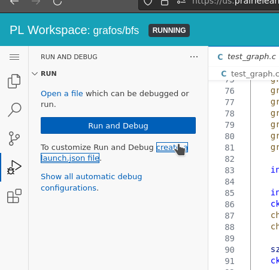
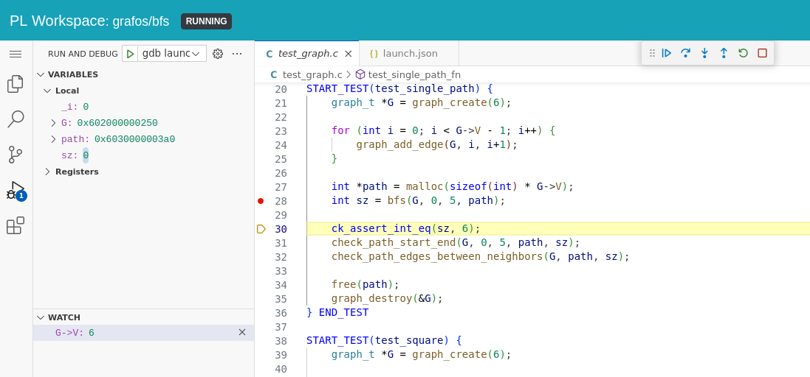

Debug C no VSCode
Assim como em Python e Java, precisamos de uma extensão para debugar código C no VSCode. Workspaces do PrairieLearn tem a extensão Eclipse CDT já instalada e podemos usá-la para debugar programas em C linha a linha como já fizemos nos últimos semestres. Ela não é tão eficiente quanto os debuggers Python e Java, mas já ajuda muito.
Warning
Não se esqueçam de compilar o programa com as flags -O0 -g para ter acesso a todas as variáveis ao debugar. A linha de comando completa ficaria assim:
A configuração dessa extensão é via um arquivo launch.json dentro da pasta .vscode do projeto de vocês. Um arquivo deste tipo é criado ao selecionar a opção abaixo.

Selecione GDB na caixa de seleção que aparecer. Delete o conteúdo padrão do arquivo e cole o seguinte.
{
"version": "0.2.0",
"configurations": [
{
"type": "gdb",
"request": "launch",
"name": "gdb launch",
"program": "${workspaceFolder}/a.out", // edite para o caminho do executável desejado
"initCommands": [
"set environment CK_FORK no"
],
// descomente abaixo se precisar usar entrada padrão
// , "arguments": "< in1.txt"
}
]
}
Agora você deve ter o debug ativado e pode usá-lo para encontrar erros nos programas de vocês :)
